Цилиндр и конус имеют общие основание и высоту. Высота цилиндра равна радиусу основания. Площадь боковой поверхности цилиндра равна 5√2. Найдите площадь боковой поверхности конуса.
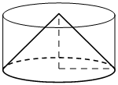Найдите объём многогранника, вершинами которого являются вершины A, B, C, C1 правильной треугольной призмы ABCA1B1C1, площадь основания которой равна 6, а боковое ребро равно 9.
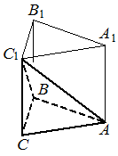В прямоугольном параллелепипеде ABCDA1B1C1D1 известно, что AB=8, BC=7, AA1=6. Найдите объём многогранника, вершинами которого являются точки A, B, C, A1, B1, C1.
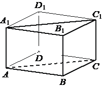Шар, объём которого равен 18, вписан в цилиндр. Найдите объём цилиндра.
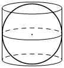Найдите объём многогранника, вершинами которого являются вершины A, B, C, D, B1 прямоугольного параллелепипеда ABCDA1B1C1D1, у которого AB=9, BC=3, BB1=8.
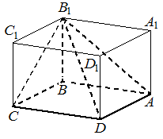Цилиндр вписан в прямоугольный параллелепипед. Радиус основания и высота цилиндра равны 2. Найдите объём параллелепипеда.
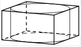Через среднюю линию основания треугольной призмы, объём которой равен 52, проведена плоскость, параллельная боковому ребру. Найдите объём отсечённой треугольной призмы.
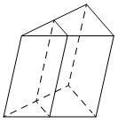Через среднюю линию основания треугольной призмы проведена плоскость, параллельная боковому ребру. Найдите объём этой призмы, если объём отсечённой треугольной призмы равен 15.
Дана правильная треугольная призма ABCA1B1C1 , площадь основания которой равна 8, а боковое ребро равно 6. Найдите объём многогранника, вершинами которого являются точки A, C, A1, B1, C1 .
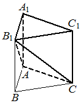В прямоугольном параллелепипеде ABCDA1B1C1D1 известно, что AB=6, BC=5, AA1=4. Найдите объём многогранника, вершинами которого являются точки A, B, C, B1 .
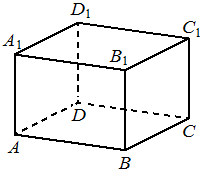Через среднюю линию основания правильной треугольной призмы, объём которой равен 84, проведена плоскость, параллельная боковому ребру. Найдите объём отсечённой треугольной призмы.
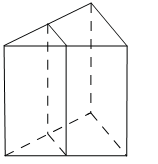Дано два цилиндра. Объём первого цилиндра равен 15. У второго цилиндра высота в 3 раза меньше, а радиус основания в 2 раза больше, чем у первого. Найдите объём второго цилиндра.
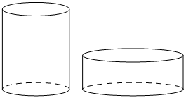Цилиндр и конус имеют общие основание и высоту. Объём цилиндра равен 30. Найдите объём конуса.
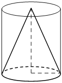Найдите объём многогранника, вершинами которого являются вершины A, B, C, D, A1 прямоугольного параллелепипеда ABCDA1B1C1D1, у которого AB=3, AD=9, AA1=4.
Конус вписан в шар. Радиус основания конуса равен радиусу шара. Объём шара равен 60. Найдите объём конуса.
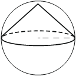В прямоугольном параллелепипеде ABCDA1B1C1D1 известно, что AB=7, BC=6, AA1=5. Найдите объём многогранника, вершинами которого являются точки A, B, C, B1 .
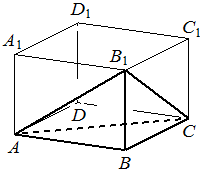В прямоугольном параллелепипеде ABCDA1B1C1D1 известно, что BC=9, CD=3, CC1=7. Найдите объём многогранника, вершинами которого являются точки A, B, C, D, C1.
Во сколько раз уменьшится объём конуса, если его высота уменьшится в 9 раз, а радиус основания останется прежним?
В прямоугольном параллелепипеде ABCDA1B1C1D1 известно, что AB=5, BC=4, AA1=3. Найдите объём многогранника, вершинами которого являются точки A, B, C, D, A1, B1 .
Шар вписан в цилиндр. Площадь полной поверхности цилиндра равна 30. Найдите площадь поверхности шара.
Найдите объём многогранника, вершинами которого являются вершины A, B, C, B1 правильной треугольной призмы ABCA1B1C1, площадь основания которой равна 3, а боковое ребро равно 8.
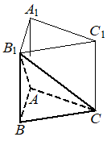Цилиндр и конус имеют общие основание и высоту. Объём цилиндра равен 6. Найдите объём конуса.
Площадь боковой поверхности треугольной призмы равна 24. Через среднюю линию основания призмы проведена плоскость, параллельная боковому ребру. Найдите площадь боковой поверхности отсечённой треугольной призмы.
Конус вписан в шар. Радиус основания конуса равен радиусу шара. Объём конуса равен 12. Найдите объём шара.
Цилиндр и конус имеют общие основание и высоту. Объём конуса равен 6. Найдите объём цилиндра.
В прямоугольном параллелепипеде ABCDA1B1C1D1 известно, что AB=9, BC=7, AA1=6. Найдите объём многогранника, вершинами которого являются точки A, B, C, B1 .
Шар, объём которого равен 24, вписан в цилиндр. Найдите объём цилиндра.
Объём куба равен 80. Найдите объём треугольной призмы, отсекаемой от куба плоскостью, проходящей через середины двух рёбер, выходящих из одной вершины, и параллельной третьему ребру, выходящему из этой же вершины.
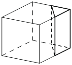Дано два цилиндра. Объём первого цилиндра равен 18. У второго цилиндра высота в 3 раза меньше, а радиус основания в 2 раза больше, чем у первого. Найдите объём второго цилиндра.
Дана правильная треугольная призма ABCA1B1C1, площадь основания которой равна 4, а боковое ребро равно 6. Найдите объём многогранника, вершинами которого являются точки B, C, A1, B1, C1 .
Через среднюю линию основания треугольной призмы проведена плоскость, параллельная боковому ребру. Найдите объём этой призмы, если объём отсечённой треугольной призмы равен 5.
В прямоугольном параллелепипеде ABCDA1B1C1D1 известно, что AB=7, BC=6, AA1=5. Найдите объём многогранника, вершинами которого являются точки A, B, C, A1, B1, C1.
Найдите объём многогранника, вершинами которого являются вершины A, B, C, C1 правильной треугольной призмы ABCA1B1C1, площадь основания которой равна 7, а боковое ребро равно 9.
Через среднюю линию основания треугольной призмы проведена плоскость, параллельная боковому ребру. Площадь боковой поверхности отсечённой треугольной призмы равна 36. Найдите площадь боковой поверхности исходной призмы.
Цилиндр и конус имеют общие основание и высоту. Высота цилиндра равна радиусу основания. Площадь боковой поверхности конуса равна 3√2. Найдите площадь боковой поверхности цилиндра.
В прямоугольном параллелепипеде ABCDA1B1C1D1 известно, что AB=6, BC=5, AA1=4. Найдите объём многогранника, вершинами которого являются точки A, B, C, D, A1, B1 .
В прямоугольном параллелепипеде ABCDA1B1C1D1 известно, что AB=9, BC=6, AA1=5. Найдите объём многогранника, вершинами которого являются точки A, B, C, B1.
Через среднюю линию основания треугольной призмы проведена плоскость, параллельная боковому ребру. Найдите объём этой призмы, если объём отсечённой треугольной призмы равен 7.
Цилиндр, объём которого равен 18, описан около шара. Найдите объём шара.
Цилиндр и конус имеют общие основание и высоту. Объём цилиндра равен 18. Найдите объём конуса.
Цилиндр и конус имеют общие основание и высоту. Объём конуса равен 9. Найдите объём цилиндра.
Во сколько раз увеличится объём конуса, если радиус его основания увеличится в 11 раз, а высота останется прежней?